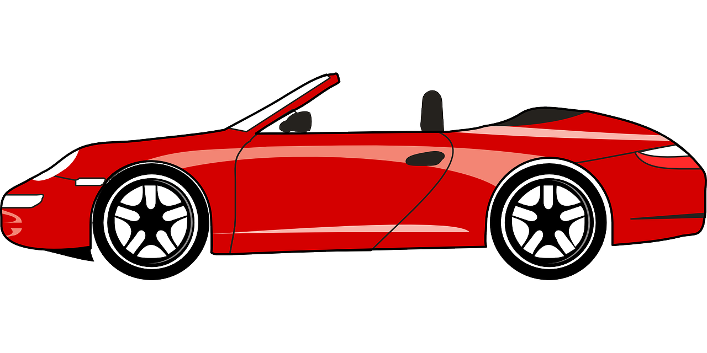
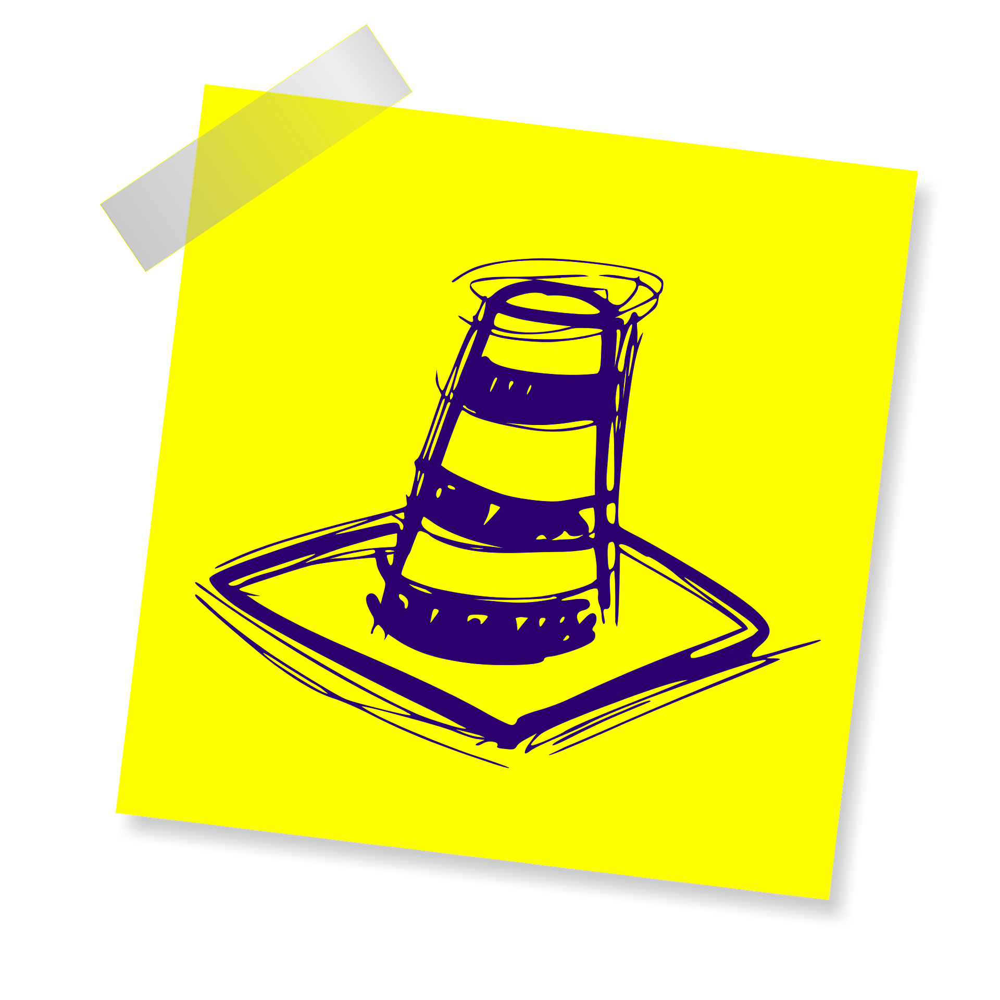

Синтаксические конструкции
 Александр Шлейко Яндекс
Александр Шлейко Яндекс
Лектор, компания
Александр Шлейко Яндекс
разработчик в Яндекс
После обучения Вы устроились на стажировку в небольшую it-компанию. До Вас стажировку проходил на этом месте другой стажер, который не смог завершить небольшой проект. Ваш куратор поручил Вам разобраться с его кодом.
Как бы хорошо не был написан код, он не застрахован от ошибок. Обычное поведение программы - в случае ошибки сообщить о ней и окончить выполнение дальнейшего кода. Однако, бывают ситуации, когда требуется иное поведение.
Если Вы скажете, что ошибки надо решать, а не прятать, я полностью с Вами соглашусь.
Однако, всегда ли наличие ошибки зависит от Вас?
Может ли быть ситуация, при которой может произойти ошибка, несмотря на то, что написанный Вами код полностью корректен?
Например, при возникновении ошибки необходимо сообщить об этом пользователю как-то культурно
В случае, если пользователь встретится с ошибкой скрипта, лучше, наверное, ему сообщить об этом ошибкой "Что-то пошло не так..." зафиксировать ошибку и дать возможность продолжить работу, а не оставить его один на один с непонятным поведением страницы?
Например, при возникновении ошибки необходимо получить бОльшую информацию
При выполнении скрипта возникает ошибка. Не всегда очевидно, какие значения данных к этому приводят. В этом случае в блоке catch достаточно будет дописать вывод необходимых нам данных, приводящих к ошибке.
Например, случившаяся ошибка не должна прерывать выполнение дальнейшего кода
Подключение виджета для отображение погоды на сайте может прекратить выполнение дальнейшего кода. Лучше заранее такое предусмотреть.
Конструкция try..catch служит для того, чтобы браузер "попытался" интерпретировать код.
Однако, если выполнить код не удастся, то можно "поймать" ошибку и/или промежуточные данные, обработать её и затем
безопасно выполнять код дальше.
Конструкция try..catch состоит из блоков:
В блоке try описывается программный код, который браузер должен "попытаться" выполнить.
В блоке catch описывается программный код, который браузер должен выполнить, если в результате выполнения кода в
блоке try произошла ошибка.
В блоке finally описывается программный код, выполнение которого произойдет независимо от того, произойдёт ли ошибка
в результате выполнения кода в блоке try или нет.
try {
// .. код, который может выполниться неверно
} catch(e) {
// .. код, который в этом случае выполнится
}
try {
// .. код, который может выполниться неверно
} finally {
// .. код, который выполнится в любом случае
}
try {
// .. код, который может выполниться неверно
} catch(e) {
// .. код, который в этом случае выполнится
} finally {
// .. код, который выполнится в любом случае
}
try{
console.log(Ошибка не произошла!);
} catch(e) {
console.log('Ошибка произошла!');
}
// -> Uncaught SyntaxError: missing )
// after argument list
В этом случае try...catch не будет выполняться, интерпретатор сообщит о синтаксической ошибке
try...catch.
try {
setTimeout(()={
console.log(null.unknown_property);
},200)
} catch(e) {
console.log('Ошибка произошла!');
}
// -> Uncaught ReferenceError: Invalid
// left-hand side in assignment
js/game.src.js:102
try {
this.gameOverDiv.classList.remove('fade');
} catch (e) {
console.info('Not found #game_over!');
}
js/game.src.js:191
try {
this.gameOverDiv.classList.add('fade');
} catch (e) {
console.info('Not found #game_over!');
}
Если произойдёт ошибка при выполнении кода в блоке try, в консоли будет выведено сообщение:
Not found #game_over!
Это сообщение будет выведено независимо от того, какая ошибка в try произойдёт на самом деле.
Иногда возникают исключительные ситуации, которые, с точки зрения интерпретатора, ошибкой не считаются, но ошибка проявится позже - например, недополучены какие-то параметры с сервера. Или может произойти ошибка со стороны бизнес-логики - например, недопустимое значение исходных данных.
С точки зрения интерпретатора, такие случаи ошибками не считаются, однако, с точки зрения разработччика - они являются ошибками. В таких случаях требуется генерировать свои ошибки.
Оператор throw создаёт ошибку.
Например,
throw('Я ошибка!');
// -> Uncaught Я ошибка!
или
const a = 1;
const b = 1;
const c = 1;
const d = b ** 2 - 4 * a * c;
if(d < 0) throw ('При дискриминанте меньше нуля\
уравнение не имеет вещественных корней!')
console.log(x1 = (-b - Math.sqrt(d))/2/a);
// -> Uncaught При дискриминанте меньше нуля
// уравнение не имеет вещественных корней!
Удобно, не правда ли?
Если try...catch служит для перехвата ошибки и позволяет дальнейшее выполнение кода, throw прекращает выполнение кода и создает ошибку.
Используя эти операторы разработчик может контролировать поведение скрипта в отношении ошибок.

Память не бесконечна, поэтому ее требуется периодически очищать от “мусора” - неиспользуемых значений переменных, объектов и их свойств. За этим следит “сборщик мусора” - алгоритм, очищающий память.
Как понять, можно ли удалить какое-то значение? Это просто. Значение считается неиспользуемым, если на него не ведет никакая ссылка.
Если мы объявим переменную:
x = 'red_car';
в памяти будет записано значение red_car, на которое ссылается указатель x
console.log(x);
// -> red_car
Можем присвоить еще одному указателю это значение. И этот указатель тоже будет ссылаться на значение red_car
y = x;
console.log(y);
// -> red_car
delete?Сборщик мусора удаляет те значения, на которые не ссылается ни одна ссылка-указатель DOM-дерева.
Если на значение ведёт ссылка-указатель x, значение не будет удалено.
Оператор delete удаляет ссылку на значение и позволяет сборщику мусора высвободить память компьютера (если нет других ссылок на значение)
Оператор delete позволяет удалять свойства объектов.
Оператор delete служит для удаления элемента массива, имени или свойства объекта.
Синтаксис:
delete nameOfVariable;
delete object.property;
delete object['property'];
delete array['index'];
1. delete возвращает ```false``` только если свойство существует, но не может быть удалено, и ```true``` - в любых других случаях.
let anybodyObject = {"first": 1};
console.log(delete anybodyObject.second);
// -> true
console.log(anybodyObject);
// -> {first: 1}
2. С помощью`delete` можно удалить только свойство объекта, а значит, нельзя удалить переменные (объявленные через `var` и `let`).
var x = "you can't delete me";
console.log(delete x);
// -> false
console.log(x);
// -> you can't delete me
3. при удалении элемента массива, в массиве сохраняется “пустое место” (empty) от этого элемента, то есть длина массива при этом не изменится
let array = ["first","second","third"];
console.log(delete array[2]);
// -> true
console.log(array);
// -> ["first", "second", empty]
4. delete не изменяет прототип объекта
5. существуют свойства, которые нельзя удалить. Например:
f = [1,2,'third'];
console.log(delete f.length);
// -> false;
console.log(f.length);
// -> 3;
delete this.cones[key];

В ES6 появилась возможность задания функций через «стрелку» =>
Например,
let sum = function(a,b){
return a + b;
}
можно записать так:
let sum(a,b)=>{
return a + b;
}
Если в теле функции не более одной операции, то не обязательно использовать {}, при этом для возврата значения не требуется писать return.
Например,
let sum = function(a,b){
return a + b
}
можно записать так:
let sum(a,b) => a + b;
Зачем нужны стрелочные функции?
Стрелочные функции - НЕ “просто короткая запись” обычных функций. В отличие от стрелочных, обычные функции имеют свой контекст. (свой this). Стрелочные функции не имеют своего контекста (своего this), а берут его из своего окружения.
Например,
если функцию
this.car_pos = this.POS_UNDEFINED;
setTimeout(function(){
this.car_pos = pos;
}, 500 / this.speed);
заменить на стрелочную:
this.car_pos = this.POS_UNDEFINED;
setTimeout(()=>
this.car_pos = pos
, 500 / this.speed);
то контекстом setTimeout станет нужный нам объект game.


В переменной key в функции removeCone у нас уже хранится значение количества конусов, которые мы проехали
в JavaScript есть 7 базовых типов данных:
undefined;null;boolean;number;string;symbol;object.При этом все, кроме object считаются примитивными.
Условно у типа object можно выделить «подтипы»:
Array),Function),RegExp)Каким образом можно скопировать объект в javascript?
в JavaScript есть только один способ создать новый объект - создать новый объект.
При попытке скопировать объект, например, таким образом:
func2 = func1;
, Вы получите новую ссылку на объект.
При запуске функции создается объект LexicalEnvironment - дополнительный параметр, который включает в себя аргументы, функции и локальные переменные, которые определяются при вызове функции.
Областью видимости таких параметров является тело функции.
Теория теперь достаточно свежая
Например:
powerOfTwo = function() {
var power = 1;
return function() {
power *= 2;
p = power
return p;
}
}()
console.log(powerOfTwo());
console.log(powerOfTwo());
console.log(powerOfTwo());
console.log(powerOfTwo());
console.log(powerOfTwo());
// -> 2
// -> 4
// -> 8
// -> 16
// -> 32
removeConeWrapper() {
let last = 0;
this.removeCone = (key) => {
if (key !== undefined) {
this.cones[key].remove();
delete this.cones[key];
last = key;
}
return last;
};
},
.js\user.settings.js
11:17 warning Unexpected unnamed function func-names
28:21 warning Unexpected unnamed function func-names
Видно, что есть ещё места, над которыми нам нужно поработать.
Сегодня нами были освоены новые инструменты:
Перехват ошибки:
Удаление переменной:
Стрелочные функции:
Замыкания:
Все изображения (за исключением конуса и взрыва из репозитория и эмблемы JS) взяты с ресурса pixabay и распространяются по лицензии CC0.